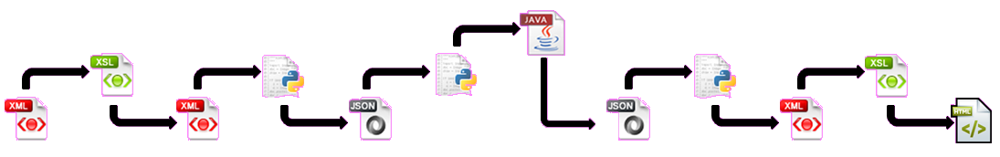

CollateOS, a preprocessing protocol for CollateX, is a knowledge-based system that normalizes variation in early Cyrillic orthography so as to improve the accuracy of the CollateX alignment of early Slavic materials. For more information about CollateX see http://collatex.net.

If the documents are in TEI format, with multiple witnesses being inside the same document, split them using ______.xsl, place the results into a folder. Proceed to run scripts. Otherwise proceed to Step 2.
| Script | Input | Output |
|---|---|---|
| XMLToJSON.py | -i path to the folder with XML files | JSON files ready to be run through collatex written to the input folder |
| XMLSToJSON.py | -i path to the folder with XML files -o path to the JSON file for the output to be written to |
a single JSON file specified after -o flag |
| runCollatex.py | -i path to the JSON files used as input to CollateX [-new] if intending
not to overwrite existing JSONs. This will create a collatexOutputfolder in the directory of the input files and write output there. |
Output of the CollateX application either overwriting the original files or writing to collatexOutput |
| JSONToXML.py | -i path to the folder with JSON files created by CollateX | XML files in the output directory to be used in _____.xsl to create the single HTML file |
| Preprocessing.py | N/A, not intended to be ran by the user | N/A, not intended to be ran by the user |
| Wrapper.py | name of the script being ran (xmltojson.py or xmlstojson.py) -i path to the folder with XML files -o path to the JSON file for the output to be written to (if running xmlstojson.py only) [-new] if intending not to overwrite existing JSONs. This will create a collatexOutputfolder in the directory of the input files and write output there. |
JSON files for each input XML (if running xmltojson.py) A single JSON file with all witnesses combined (if running xmlstojson.py) Output of the CollateX application either overwriting the files above or writing to collatexOutput folder XML files in the output directory to be used in _____.xsl to create the single HTML file |
Run ______.xsl to saw the multiple .xml files created by JSONToXML.py into a single .html.
<add>, <hi>, <unclear>,
keeping their inner text node intact.<del>,
<gap>, <lacuna>, <lb>,
<pb><choice> element is present, choose the latter of each of
the following pairs: (<sic>, <corr>),
(<orig>, <reg>),
(<abbr>, <expan>),
(<seg>, <seg>)PUNC. Otherwise, continue.
soundex-rules.xmlin the following order:
$manyToOne, $oneToMany,
$oneToOne.Special vowelscategory from
vowels.xml, unless they are word-initial
ннbecomes
н) and remove all vowels from the rest of the word. Note that word-initial letter is retained even if it is a vowel, but other vowels are eventually deleted.
X(upper-case Latin letter) characters.
Developed by David J. Birnbaum (djbpitt@gmail.com) and Minas Abovyan. CC BY-NC-SA. Project site http://collateos.obdurodon.org. GitHub repository https://github.com/obdurodon/CollateOS. Thanks to Ronald Dekker and the rest of the CollateX development team for their advice.